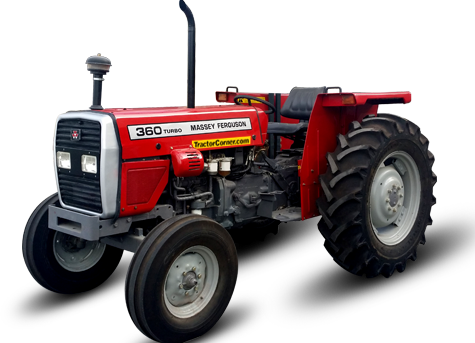
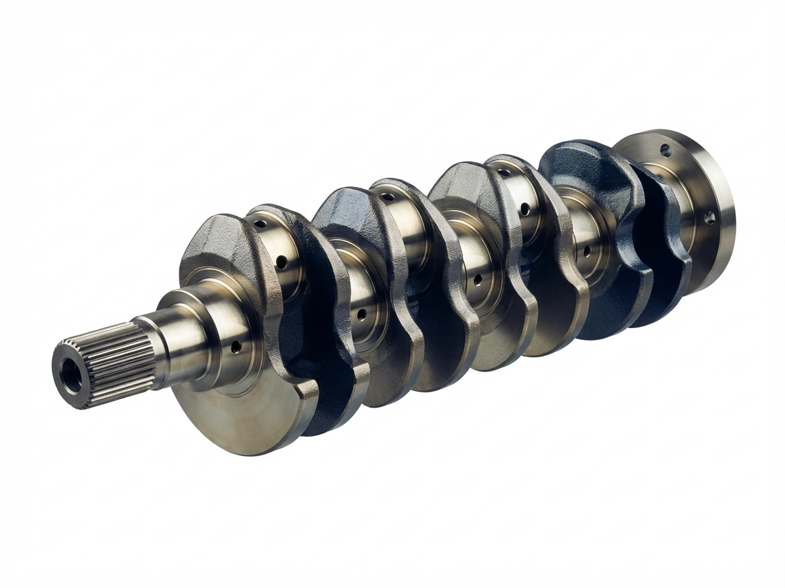
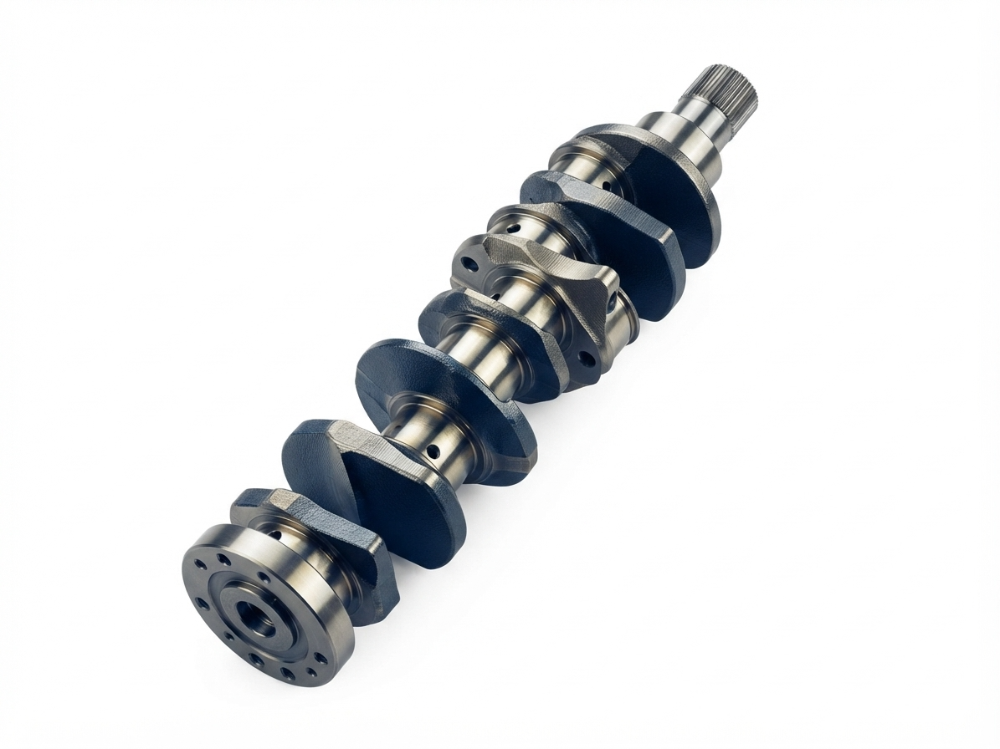
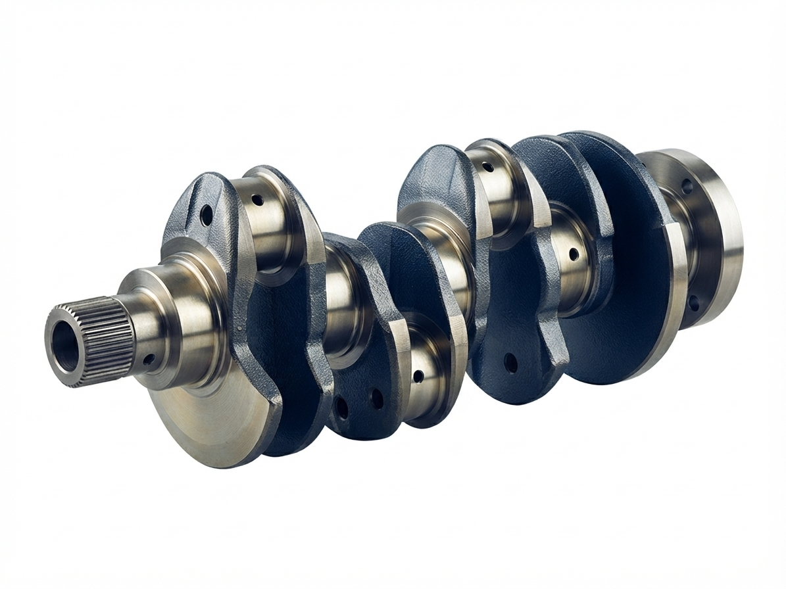
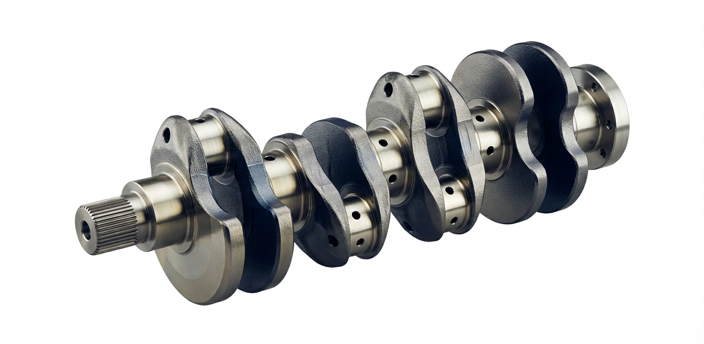
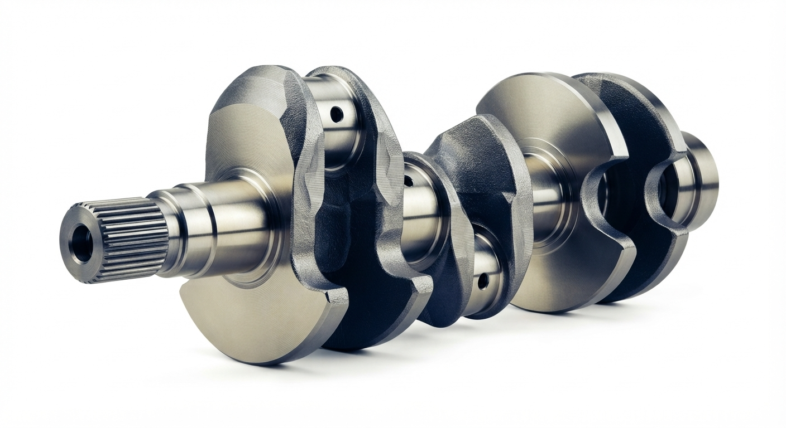

کاتالوگ تولید میل لنگ
تولید تخصصی میللنگ تراکتورهای فرگوسن ۱۶۵، ۲۴۰، ۲۸۵، ۳۹۹ و ۴۷۵ به روش ریختهگری
اولین تولید کننده میل لنگ موتورهای کشاورزی در ایران
میللنگهای این شرکت در سه رده کاربرد عرضه میشوند: موتورهای کشاورزی و تراکتور (شامل مدلهای فرگوسن ۱۶۵، ۲۴۰، ۲۸۵، ۳۹۹ و ۴۷۵)، موتورهای دیزل تجاری و سنگین، و موتورهای بنزینی سبک. هر رده محدوده مشخصی از قطر ژورنال، کورس، تعداد لنگ و کلاس وزنی دارد که در بخش مشخصات سفارش آمده است.
میل لنگ قلب تپنده هر موتور درونسوز است؛ قطعهای که حرکت خطی پیستون را به حرکت دورانی تبدیل میکند و در همان حال باید بارهای خمشی و پیچشی متغیر، لرزش و سایش را سالهای متمادی تاب بیاورد. به همین دلیل در ساخت آن، خواصی همزمان خواسته میشود که در نگاه اول متناقض به نظر میرسند: سطحی سخت و مقاوم به سایش در کنار مغزی چقرمه و مقاوم به ضربه.
میل لنگ های این خط تولید با روش ریخته گری ساخته می شوند؛ روشی که با پرکردن قالب از فلز مذاب و سپس انجماد آن، شکل نهایی قطعه را می سازد و برای تولید انبوه قطعاتی مانند میل لنگ تراکتور پیوستگی تولید بالایی دارد.
مذاب فلز در قالب ریخته میشود و پس از انجماد، قطعه خام به دست میآید. این روش امکان تولید انبوه مدلهای یکسان را فراهم میکند و ماشینکاری نهایی ژورنالها، فیلهها و پینها روی قطعه ریختگی انجام میشود.
این شرکت میل لنگ تراکتورهای فرگوسن مدلهای ۱۶۵، ۲۴۰، ۲۸۵، ۳۹۹ و ۴۷۵ را به روش ریختهگری تولید میکند. این مدلها پرتقاضاترین میل لنگهای کشاورزی بازار هستند و برای آنها برنامه تولید پیوسته و موجودی قابل اتکا در نظر گرفته شده است.
فولاد پایه این خط تولید، فولاد کم آلیاژ و قابل عملیات حرارتی ۴۳۴۰ است که به دلیل چقرمگی بالا و توانایی رسیدن به استحکام زیاد همراه با مقاومت خستگی مناسب، شناخته شده است.
بر پایه درخواست مشتری، فولادهای آلیاژی دیگر مانند B30EN نیز قابل تأمین است. ماشینکاری فولاد ۴۳۴۰ در حالت آنیل یا نرماله و تمپرشده توصیه میشود.
نگاهی نزدیک به میللنگهای تولیدی





فولاد ۴۳۴۰؛ سختشونده در کل مقطع
فولاد پایه این خط تولید، فولاد کم آلیاژ و قابل عملیات حرارتی ۴۳۴۰ است که به دلیل چقرمگی بالا و توانایی رسیدن به استحکام زیاد همراه با مقاومت خستگی مناسب، شناخته شده است. این فولاد از نوع «سختشونده در کل مقطع» به شمار میرود و مقاطع ضخیم آن نیز قابل عملیات حرارتی تا استحکام بالاست.
بر پایه درخواست مشتری، فولادهای آلیاژی دیگر مانند B30EN نیز قابل تأمین است. لازم به ذکر است که ماشینکاری فولاد ۴۳۴۰ در حالت آنیل یا نرماله و تمپرشده توصیه میشود؛ در حالت استحکام بالا، قابلیت ماشینکاری آن به حدود ۱۰ تا ۲۵ درصد حالت آنیل کاهش مییابد و همین نکته، ترتیب مراحل تولید را تعیین میکند.
فولاد کم آلیاژ، سختشونده در کل مقطع، چقرمگی بالا
آلیاژ جایگزین بر اساس درخواست مشتری
وضعیت توصیهشده برای ماشینکاری
توالی تولید در این شرکت بر پایه ریخته گری و سپس «عملیات حرارتی پیش از ماشین کاری نهایی» بنا شده است، زیرا عملیات حرارتی می تواند شکل قطعه را تا حدود ۱٫۵ میلی متر (۰٫۰۶ اینچ) جابه جا کند.
فولاد آلیاژی در کوره ذوب و ترکیب شیمیایی آن پیش از ریختن تنظیم و کنترل میشود.
مذاب در قالب ریخته میشود و پس از انجماد، قطعه خام میل لنگ به دست میآید؛ سپس قالب باز و قطعه از آن خارج میشود.
پلیسهها، زائدههای تغذیه و ماسههای چسبیده از سطح قطعه پاک میشوند.
قطعه خام در محیط کنترلشده سریع سرد و سپس تمپر میشود تا سختی مغزی به حدود ۳۶ راکول C برسد.
ژورنالها، فیلهها، پینها و سوراخهای روغنکاری تراش میخورند.
قطعه در کوره تا محدوده ۲۰۰ تا ۳۱۵ درجه سلسیوس (۴۰۰ تا ۶۰۰ درجه فارنهایت) گرم و با شیب سردایش کنترلشده سرد میشود تا تنشهای پسماند ماشینکاری حذف شوند.
قطعه در معرض مخلوط آمونیاک و نیتروژن قرار میگیرد و نیتروژن اتمی با عناصر آلیاژی سطح، نیتریدهای پایدار و سخت میسازد.
برخلاف کربن دهی که در گستره پایداری آستنیت و دمای ۸۷۵ تا ۹۲۵ درجه سلسیوس انجام میشود، این فرآیند در گستره پایداری فریت و دمایی بسیار پایین تر، یعنی حدود ۵۵۰ تا ۶۵۰ درجه سلسیوس، اجرا میشود. به همین دلیل قطعه پس از نیتروژن دهی نیازی به سردایش سریع ندارد و در هوا سرد میشود؛ این ویژگی اعوجاج ابعادی را به حداقل میرساند.
عمق لایه سخت بر پایه کاربرد و درخواست مشتری تنظیم میشود و معمولاً در بازه ۰٫۰۰۲ تا ۰٫۰۰۵ اینچ (حدود ۵۰ تا ۱۲۵ میکرومتر) قرار میگیرد. افزایش بیش ازحد این عمق توصیه نمیشود، زیرا میتواند نواحی فیله را ترد و مستعد ترک کند.
برای تقویت بیشتر مقاومت خستگی، فیلهها پیش از نیتروژن دهی تحت فرآیند رولینگ (غلطک کاری) فیله قرار میگیرند؛ این عملیات تنش فشاری مطلوبی در سطح ایجاد میکند که آغاز ترک خستگی را به تأخیر میاندازد. تکرار فرآیند نیتروژن دهی پس از هر سنگ زنی ژورنالها نیز امکان پذیر است.
هر قطعه پیش از تحویل، مجموعه ای از آزمون ها را می گذراند تا هم خوانی آن با نقشه و خواص اعلام شده تضمین شود.
سفارش میل لنگ بر پایه جدول زیر و با ارائه نقشه یا نمونه فیزیکی ثبت می شود. تولید در شرکت خراسان به روش ریخته گری انجام می گیرد و برای مدل های پرمتقاضی تراکتور فرگوسن، تولید انبوه در دسترس است.
تحویل محصول همراه با گزارش کنترل کیفیت، گواهی جنس فولاد و گزارش سختی سنجی انجام می شود. برای سفارش های خاص، امکان تأمین فولاد آلیاژی سفارشی، انتخاب عمق سخت کاری متفاوت و بالانس دینامیکی تک قطعه وجود دارد.